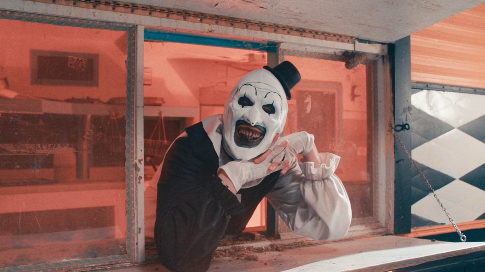

UniHorney o' mine

Здесь мы разбираем детские травмы через эмодзи. Если ребёнок прислал 🦄 — это не значит, что он счастлив. Это значит, что он просит помощи, но не знает, как её назвать.
Бадди — наш внутренний голос. Он всегда рядом. Он не осуждает. Он просто смотрит, как ты выбираешь единорога.
* Сноска про Ино: Ино — это не диагноз, это состояние. Если ты встретил Ино — ты уже в безопасности.
Выбери своего единорога
Один голос — одна душа. Выбирай осознанно.

Гности
0 голосов

СайберГоти
0 голосов

Сигил
0 голосов

Cleft
0 голосов

UniPorn
0 голосов

НяшаДаша
0 голосов

MetaBoss
0 голосов

Ibly
0 голосов

Knightmare
0 голосов